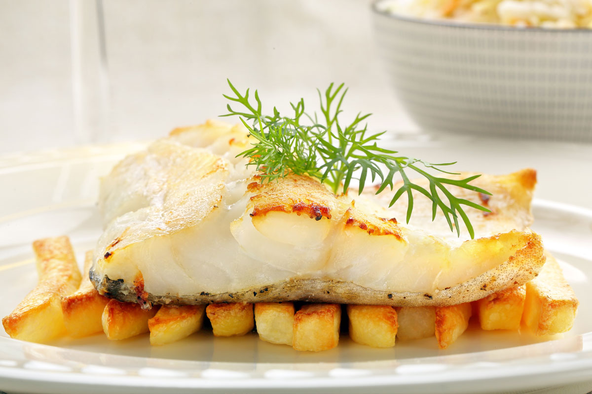

PIATTI TIPICI ITALIANI
Spaghetti alla Carbonara
La ricetta degli spaghetti alla carbonara è tipica romana, apprezzata e replicata in tutto il mondo! Scopri come fare la carbonara perfetta!

Orata al Forno
L'orata al forno è un secondo piatto di pesce classico e saporito, preparato con un contorno di gustose patate a spicchi e con tante erbe aromatiche.
Babà al Rum
Il babà al rum classico, uno dei dolci tipici napoletani, apprezzato per l'impasto soffice ma spugnoso che si impregna della deliziosa bagna al liquore!